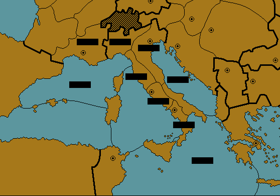
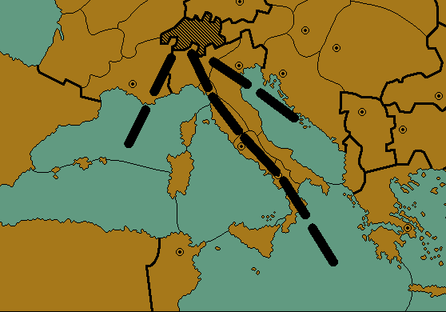

|
Sherlock Holmes,Aenigmatist |
|
I was truly astonished as Holmes began his response to the mystery that I have entitled Death at the Calhamer Club. “Holmes, I haven’t even told you the names of the German guests! How could you have possibly known that one of the suspects was named Schweizer?” “Elementary, my dear Watson. Elementary.” Holmes asked me to take a few steps away, then bent over the board, and by his movements, changed the positioning of the pieces very slightly. He then turned to me, hiding the placement of the pieces with his body. “At first, I thought that Sir Owen’s list of provinces might give rise to a sophisticated play on words, or some such drollery, but I found no such thing.” Holmes struck a match, lit his pipe, and continued. “No, my good Watson, I quickly realized that this particular conundrum was most likely related to the board itself, and the wordplay, if any, was likely not to be too complicated. I then mentally placed the pieces on a board, and once more, nothing obvious presented itself.” Holmes paused for a moment, puffing on his pipe, turned toward the other end of the room, and pointed.  “At that point, I chanced to look at the books collected here for the benefit of the Club members. Among them, as you may have noticed, is the well known monograph ‘Psychological Effects of Unorthodox Unit Placement: A Statistical Analysis,’ authored by none other than the learned Professor Szykman, wherein he discusses how the exact placement of units on a board influences the perception of the game situation by players or observers. Sir Owen, being an avid reader of Hobby related material, was likely to have read the piece, and when I mentally reviewed the unit positions a second time, it became obvious that Sir Owen had drafted his riddle as an exercise in Szykmanian unit placement.” “But Holmes,” I interjected, “you’ve got fleets scattered around the central Mediterranean, and no indication of where the units of the other countries are. Szykman’s thesis concerned whether it was possible to have a viewer form an opinion as to who was about to be attacked by having them observe the placement of the pieces. What target could they be attacking? Besides, there isn’t much room to move the units around in those small Italian provinces.” “No, Watson, you can’t move them very far, but you can rotate them. For us, that is quite enough to enable Sir Owen to quite literally point us in the direction of the killer.” Holmes stepped away from the table.  “Good gracious,” I exclaimed, as matters had now been made clear to me. Inspector Driscoll, however, examining the board, said, “All right. We now have some blocks of wood, pointing as an arrow, toward Germany. We already know our man is most likely one of the German guests we have in custody. How does it help us?” Holmes leaned over the board. “It may be pointing toward Germany, Inspector, but the arrow is pointing right at Switzerland. Sir Owen engaged in a bit of word play after all, but did so with his foreign guest in mind. The German for ‘Switzerland’ is ‘Schweiz,’ and it is not uncommon to be surnamed a ‘Swiss’ in Germany, and that surname is--” “Schweizer!” exclaimed Driscoll. Holmes took a deep drag on his pipe, puffed out a perfect smoke ring, and quietly said “Precisely.” As Driscoll bade us farewell and made a quick exit to fetch Herr Schweizer, Holmes turned, then came to a sudden stop, and asked me what the names of the other German guests were. After I informed him that they were Messrs. Von Neustadt, Von Schliefen, Von Ostmark, Grünfeld, and Messer, Holmes said, “The good inspector may have run out too soon. We shall need to ascertain if the unit positions were in fact written in Sir Owen’s hand.” “Why do you say so, Holmes?” He continued, “Because we were perhaps too quick to assume that the unit positions would have been destroyed if the killer had realized what they were. If the killer had known of their significance, what better way to mislead the investigators than to implicate someone else?” “So, Holmes, if the unit positions are found not to be in Sir Owen’s hand, you think that the killer rewrote the unit positions, so as to implicate a fellow guest?” “Yes, Watson. We shall need to get samples of the hand of each of the six German guests, as well as a sample that is indisputably in Sir Owen’s hand.” Holmes walked over to the desk, examined the unit positions, and said, “Now that I examine them for this purpose, the style of some of these scribblings -- three in particular -- do suggest the Continental, rather than the British.” At this point, Driscoll appeared in the hallway, with a very upset Herr Schweizer. Holmes called to the Inspector, who brought along the German, and explained his suspicions. Schweizer calmed down a bit and said, in heavily accented English, “I am perfectly certain you will find these lines by me have not been written.” “Watson,” Holmes continued, “I believe Herr Schweizer is being truthful. If the unit positions were written by the person I suspect, then he would only have needed to change three of Sir Owen’s unit positions, and Sir Owen’s word-play was a bit more polyglot and sophisticated than that contained in the text we have before us. The killer, thinking quickly, may have just hit upon the first obvious adaptation of Sir Owen’s riddle. You realize, Watson, what this means. Sir Owen's death was not accidental after all. My theory regarding the killer not being capable of solving Sir Owen's Diplomacy riddle is incorrect. Not only did he resolve it, but he had the presence of mind to alter it so as to point away from himself. The obvious conclusion is that the murder of dear Sir Owen was premeditated, and Herr Schweizer here was deliberately framed. Although we should have the proof soon enough, Watson, I put some questions to you. Which three unit positions were changed, and from what? Who was the true target of Sir Owen’s wit, and how would his unaltered puzzle have identified his killer?”
 -- Dr. John H. Watson via David E. Cohen (david_e_cohen@yahoo.com)
|